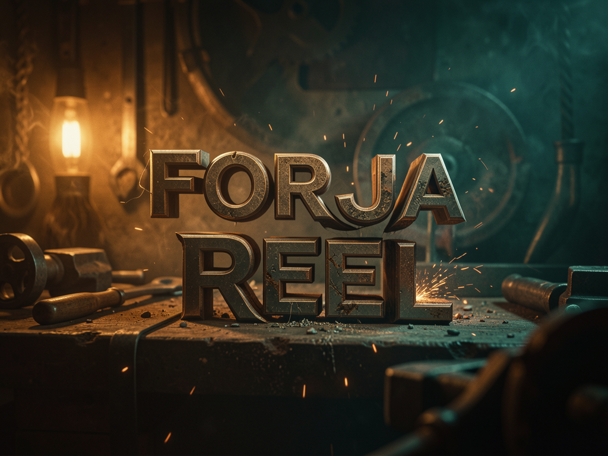

Meta-skill que entrevista você sobre seu estilo e gera a sua própria skill de edição — corte limpo, motion graphics, B-roll real, legendas e SFX, sem você abrir um editor de vídeo.

Em vez de vir com um editor fixo, o Forja Reel te entrevista e gera uma skill-filha com a SUA identidade (cores, framing, ritmo, B-roll, cold open). O motor por trás é compartilhado; o resultado é seu.
8 blocos de perguntas (o que edita, como aparece, identidade visual, ritmo, B-roll, texto, entrega, controle) — uma decisão por vez, sempre com recomendação. Termina num perfil.json.
5 fases fixas: corte por silêncio real, leitura do vídeo, motion graphics + B-roll real, SFX/render/QC, e um revisor independente em loop até PASS.
Ritmo de no máximo 4s sem golpe visual, legendas na altura do microfone, cold open obrigatório — e nada de pílulas "O PROBLEMA/A SOLUÇÃO" ou legendinha genérica.
Do vídeo bruto (cortes, silêncios, erros) até o reel de 60–90s, cada fase é uma comporta — só passa pra próxima se a anterior está correta.
silencedetect por energia — não timestamps de Whisper (impreciso ±0.2–0.3s). Tira silêncios, pausas, repetições e erros; fica com a última tomada boa.
Hyperframes monta as animações; Firecrawl traz capturas reais de repo/site pro B-roll (não imagem genérica). Cold open é obrigatório.
Um subagente limpo, não contaminado pelo que o agente principal montou, audita com /watch e devolve PASS/FAIL — se FAIL, corrige e roda de novo.
Dois são imprescindíveis; o resto é opcional e a skill se adapta ao que você tem.
Imprescindível — corte e render, base do Remotion.
# checar instalação
ffmpeg -versionImprescindível — o motor de motion graphics.
# checar instalação
npx hyperframes --versionMuito recomendado — revisão e transcrição; a que menos "inventa".
# variável de ambiente
echo $GROQ_API_KEYOpcionais: fal.ai (imagem IA, pago) · Firecrawl (B-roll real, grátis) · /watch (QC visual). O diagnóstico de ambiente é opt-in — só instala o que o seu perfil precisa, nada pago sem "sim".
Cinco passos, a maior parte é a entrevista respondendo por você.
O arquivo pronto pra instalar está neste repo.
download/forja-reel.skill # baixe direto do repo
Dois caminhos — use o mais simples pra você.
# opção A duplo-clique em forja-reel.skill # opção B (Claude) Conectores → Skills → Carregar habilidade
Use Opus (não Sonnet) na entrevista — ela precisa de mais profundidade de raciocínio pra essa etapa.
"Forja Reel" # ativa a skill e inicia os 8 blocos
O que edita, como aparece, identidade visual, ritmo, B-roll, texto, entrega, controle — uma decisão por vez, sempre com recomendação. No final, ela gera sua skill-filha (reel-edita-<marca>).
Aponte pro seu vídeo bruto e deixe o motor rodar as 5 fases.
"reel edita <caminho do MP4>" # motor completo até PASS do revisor
6 receitas de edição, escolhidas pelo motor conforme o vídeo — mais o cold open, que é sempre obrigatório.
Tela cheia com B-roll intercalado — o formato mais comum pra tutorial/demo.
Imagem sobre imagem (picture-in-picture) pra reforçar o que está sendo dito sem cortar o rosto.
Rosto com PiP que desce e compartilha tela — pra quando o produto precisa aparecer funcionando.
Split-screen pra comparar antes/depois ou dois pontos de vista ao mesmo tempo.
Texto com punch, sincronizado na altura do microfone, palavra-chave destacada.
0–3s de impacto (resultado real, hook, dado curioso) — abre todo reel, sem exceção.
Este guia cobre o suficiente pra rodar seu primeiro reel. Pra entender o motor por dentro e ver o fluxo real ponta a ponta, o curso navegável tem 4 trilhas — inematds/videos-edit-curso.